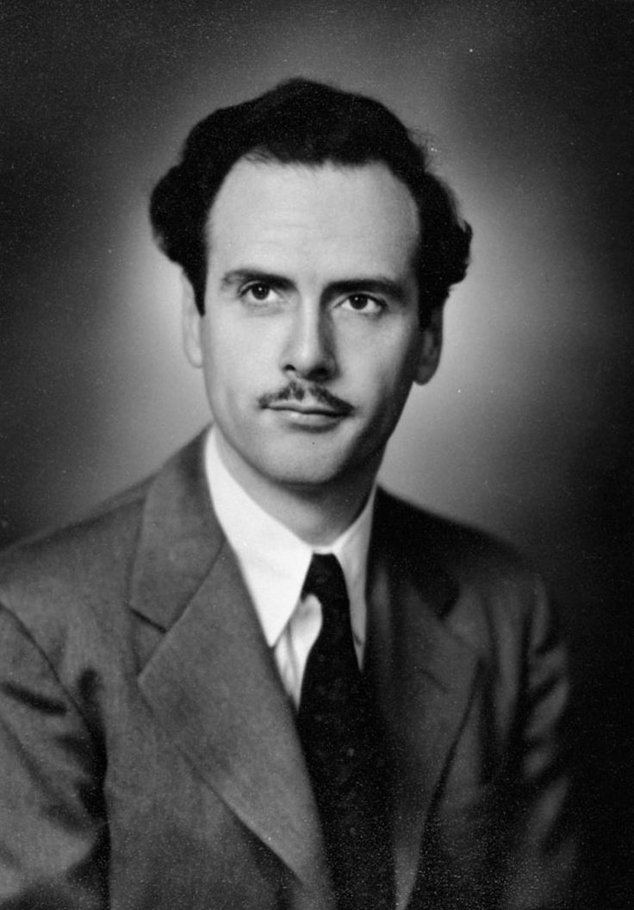
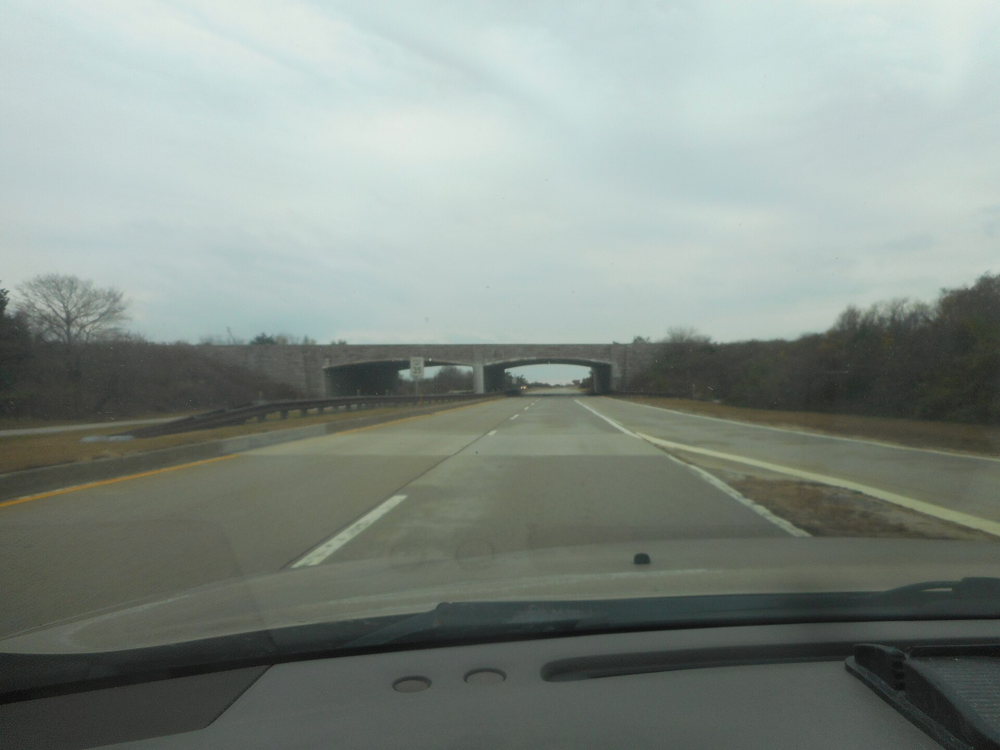
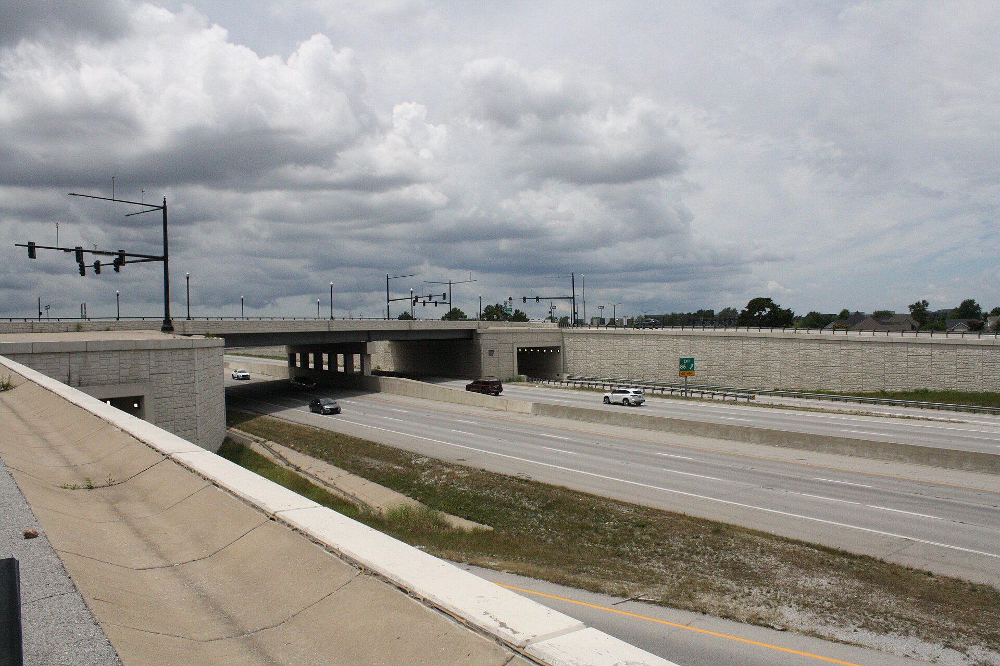

We obsess over what to post. The where and how are doing more of the talking than the words are.
Debate this · in your pods
"Posting about a cause is mostly about looking like a good person. It changes nothing."
Pick a side and defend it to your pod. Two minutes, then we fight it out as a room. No fence-sitting.
Goal of today
What you'll walk out with
By the end of class you'll have wrestled with two ideas that change how you read every feed: the medium is the message and artifacts have politics. Then you'll start spotting the politics built into the exact platforms your cause depends on. You'll go deeper on both in Thursday's module; today we dig in together.
Feel It
Same four words: "I need your help." Sent five ways. What changes?
(1) whispered face to face · (2) in a handwritten letter · (3) as a quick text · (4) shouted through a megaphone at a rally · (5) posted as a public hashtag. For each: who is it really for, and how does it land?

Marshall McLuhan, 1945. Josephine Smith (Library and Archives Canada, public domain).
Name it
"The medium is the message."
Marshall McLuhan said this in 1964, before the internet existed. Now that you've felt it, what do you think he meant?
Here's the idea
McLuhan's claim: the form of a medium shapes us more than any single thing it carries. A text and a handwritten letter can hold the identical words, but the text trains you to expect speed and brevity, and the letter asks for patience and care. Change the medium and you change how people think, feel, and relate, no matter the content. So when you pick a platform for your cause, you are not choosing a neutral pipeline. You are choosing what kind of attention you'll get, and what kind you'll never get.
A harder case
What's different about these two bridges?

A parkway overpass on the road to Jones Beach, New York (Wikimedia Commons, CC BY-SA 4.0).

A highway overpass in Bentonville, Arkansas. Brandonrush (Wikimedia Commons, CC0).
Now the real question
So what could a bridge possibly have to do with power?
Here's the idea
Do artifacts have politics? (Langdon Winner, 1980)
Robert Moses built the parkway bridges too low for buses to pass. In that era, the bus riders headed to the beach were poorer families, and because of how segregation worked, disproportionately Black families. Cars fit. Buses did not.
Historians still debate the details of that one. The bench on the next screen is a case nobody argues about.
A public bench divided by bars so no one can stretch out and sleep.
Same move, in a bench
No sign, no law, no announcement. Just the shape of the thing.
Why is a low bridge, or this bench, sneakier than a sign that says the same thing out loud?
Rosa Parks fingerprinted after her arrest, Montgomery, 1956 (Library of Congress, public domain).
The contrast
Bus segregation was a written law. The low bridge was just concrete.
Which of the two was easier to fight, and why?
Bring it home
What politics are built into Instagram, TikTok, X? What's the low bridge in your feed?
Think about who your posts reach, and who they never reach. What decides that?
A second lens
Every medium sits somewhere on a spectrum, from fast to slow.
Fast media
Instant, huge potential reach, cheap, low commitment. A viral post, a mass text.
Slow media
Takes time and effort, smaller reach, high commitment. A zine, a letter, a face-to-face meeting, a printed newsletter.
What is each one good at, and what does each one cost you?
Workshop · in your pods
Put one platform on the table and find its low bridges.
Each pod takes one medium, InstagramTikTokXa printed newslettera group text and fills all four boxes. Pick a spokesperson to report back.
Makes easy
What does this medium reward, what flows and spreads here without friction?
Makes hard
What takes real effort, or gets buried, on this medium?
Makes invisible
Who or what never shows up here at all, the people the design quietly excludes?
Who it serves
Given all that, whose interests does this medium actually serve? (Follow the money.)
Your cause · Field Notebook
Open your Field Notebook. The platform is not a neutral pipeline for your cause.
Work these three on your own, then we'll hear a few.
List every medium your cause uses right now to reach people (Instagram? a newsletter? word of mouth? nothing yet?).
Pick the main one. In one sentence: what does that medium make easy for your cause, and what does it make hard or invisible? That's its politics.
Name one slow-media move and one fast-media move you could make for your cause this semester.
Where we go from here
The medium is never a neutral pipeline.
Thursday's module: a little real McLuhan and Winner, then you map the politics of the exact platform your cause lives on. Bring the notebook. We'll reconvene at the end to share.